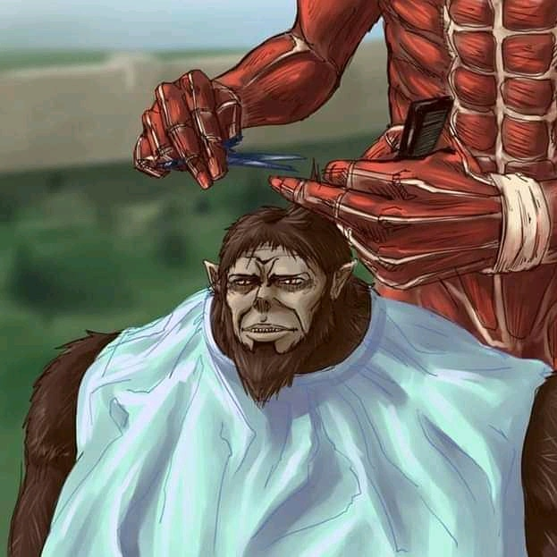

<ion-header [translucent]="true">
  <ion-toolbar>
    <ion-title>
      Tentang Saya
    </ion-title>
  </ion-toolbar>
</ion-header>

<ion-content [fullscreen]="true">
  <ion-card>
    <ion-card-header>
      <ion-card-subtitle>C14180217</ion-card-subtitle>
      <ion-card-title>Lois Fernando</ion-card-title>
    </ion-card-header>
  
    <ion-card-content>
      Keep close to Nature's heart... and break clear away, once in awhile,
      and climb a mountain or spend a week in the woods. Wash your spirit clean.
    </ion-card-content>
  </ion-card>

  <ion-card>
    <ion-card-header>
      <ion-card-subtitle>Game</ion-card-subtitle>
      <ion-card-title>Tebak Angka 1-10</ion-card-title>
    </ion-card-header>
  
    <ion-card-content>
      <ion-item>
        <ion-label>Masukkan Angka :</ion-label>
        <ion-input type="number" [(ngModel)]="angka"></ion-input>
      </ion-item>
      <ion-button fill='outline' (click)="tebak()"  expand='block'><ion-icon name="caret-forward-outline"></ion-icon> Tebak</ion-button>
    </ion-card-content>
  </ion-card>
  
</ion-content>
